1. Cкачайте последнюю версию запрета если ещё не скачали.
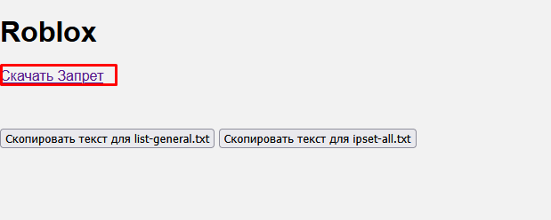
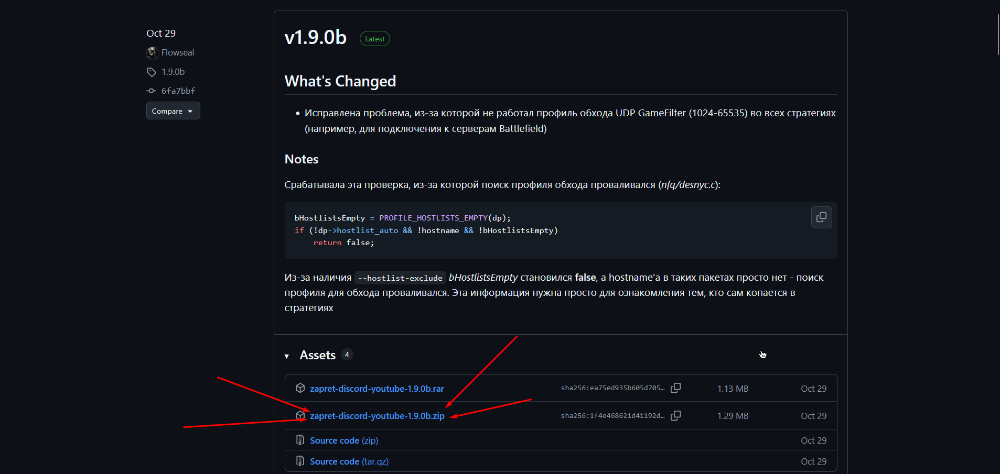
2. Откройте папку 'lists' в папке с запретом.
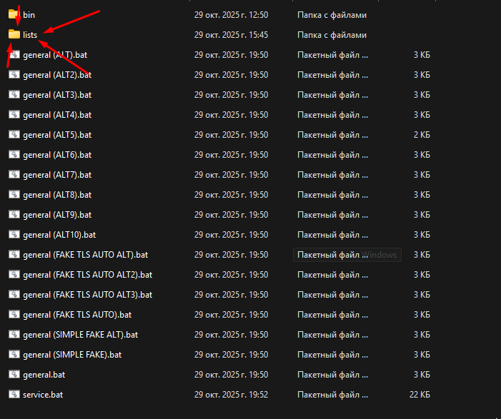
3. Откройте файл 'list-general.txt' с помощью блокнота.
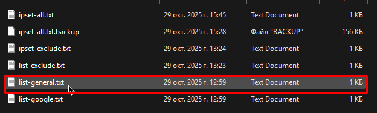
4. Удалите в файле всё, скопируйте текст ниже, вставьте и сохраните его.
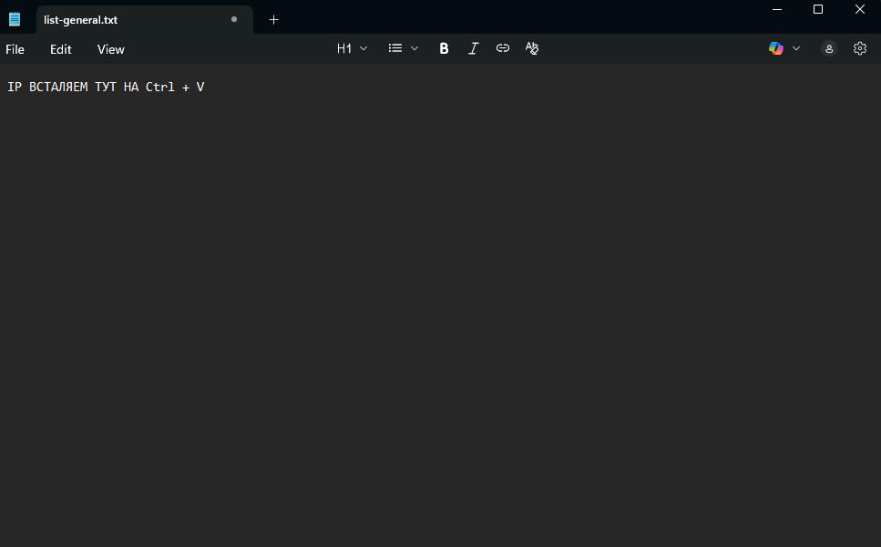
5. Откройте файл 'ipset-all.txt' с помощью блокнота.
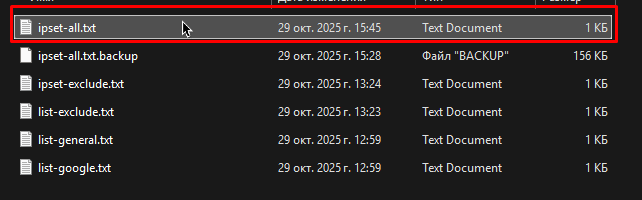
6. Удалите в файле всё, скопируйте текст ниже, вставьте и сохраните его.
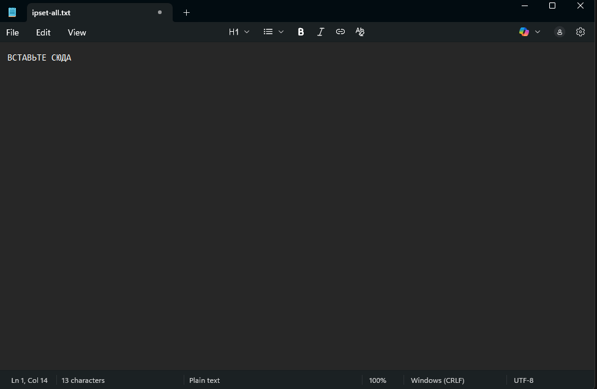
7. Зайдите в папку с запретом и запустите 'service.exe'.

8. Напишите 6 и нажмите Enter и потом ещё раз нажмите Enter.
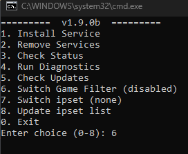
9. Надо чтобы Switch Game Filter был (enabled).
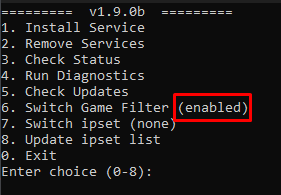
10. Теперь напишите 7 и нажмите Enter и потом ещё раз нажмите Enter.
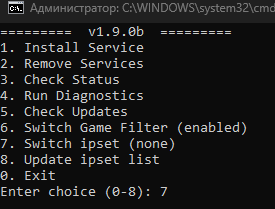
11. У вас поставилось (none) но надо (any) по этому
опять напишите 7 и нажмите Enter и потом ещё раз нажмите Enter.
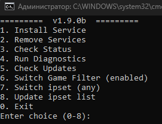
12. Теперь у вас должно быть Switch Game Filter = (enabled) и Switch ipset = (any)
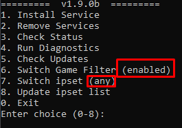
13. Выйдите из программы и обязательно перезапустите запрет!
14. Всё, теперь Roblox, Discord и Youtube должен работать, Спасибо за то что прочитали!